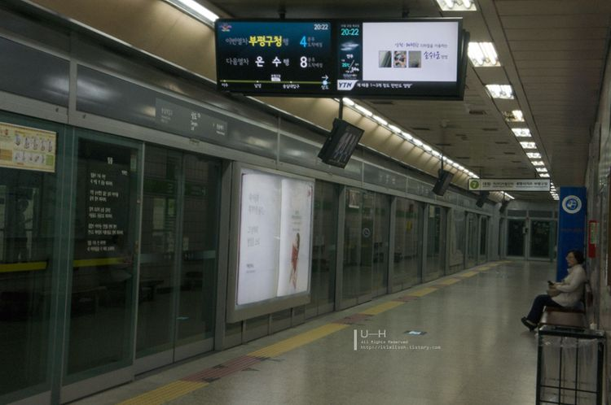
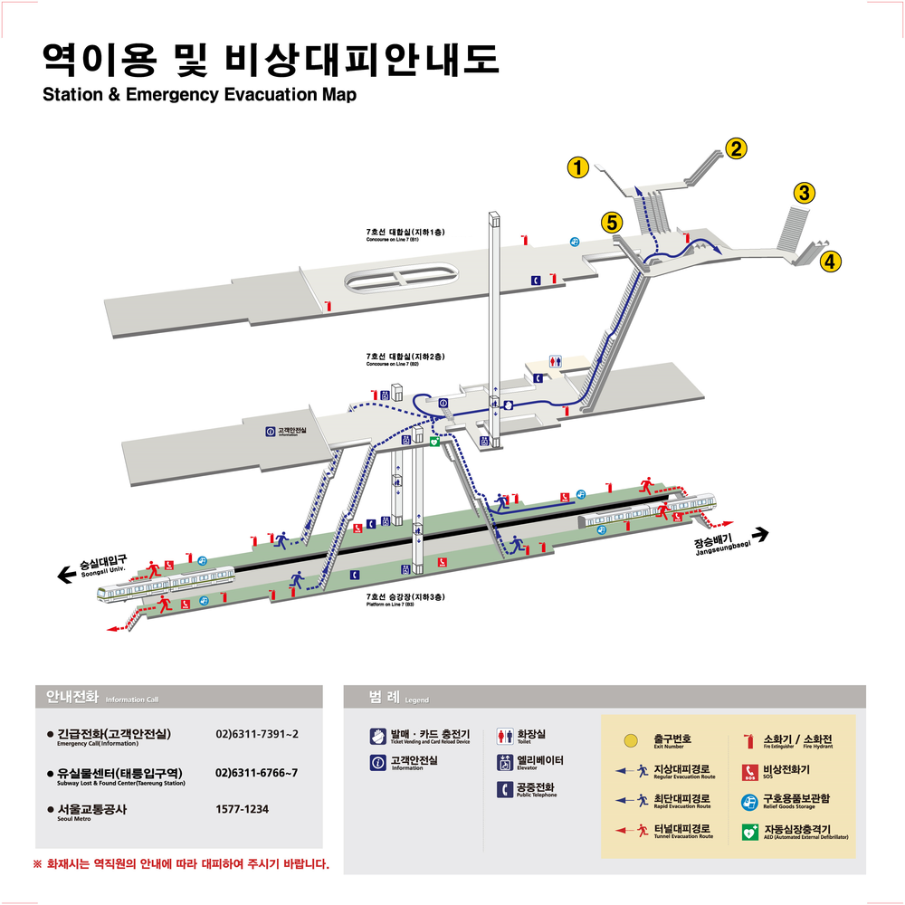

| 분류: 2000년 개업한 철도역 ㅣ대한민국의 도시철도 정거장 ㅣ서울특별시의 지하철역 ㅣ서울 지하철 7호선 ㅣ나무위키 철도 프로젝트 |
목차1.개요 2.역정보 3.역 주변 정보 3.일평균 이용객 5.승강장 |
상도역 |
||
| 장암 방면 숭실대입구 ← 0.9 ㎞ | 7호선 (739) | 석남 방면 장승배기 0.9 ㎞ → |
| 다국어 표기 | ||
| 영어 | Sangdo | |
| 한자 | 上道 | |
| 중국어 | ||
| 일본어 | 上道サ ンド |
|
| 주소 | ||
| 서울특별시 동작구 상도로 지하 272 (상도1동 702-1 번지) |
||
| 운영 기관 | ||
| 7호선 | ||
| 개업일 | ||
| 7호선 | 2000년 8월 1일 | |
| 역사 구조 | ||
| 지하 3층 | ||
| 승강장 구조 | ||
| 복선 상대식 승강장 (횡단 가능) | ||
서울 지하철 7호선 739번. 서울특별시 동작구 상도로 지하 272 (상도1동 702-1번지)에 있다.
이 역은 반대편 승강장으로 건너갈 수 있다.
같은 노선 상에 발음이 유사한 상동역 이 있으므로 주의하자.
2019년 10월 지하 1층에 ICT 기술을 통해 잎채소 상품을 재배해 판매하는 스마트 팜 인 메트로팜[1]이 오픈했다. 농장 체험 및 교육 프로그램도 운영 중
이며 옆에는 샐러드를 맛볼 수 있는 카페도 운영 중이다.
한때 중앙대앞이라는 병기역명이 있었으나 중앙대학교 에서 더 가까운 서울 지하철 9호선 흑석역이 중앙대입구라는 병기역명을 쓰면서 삭제되었다.
주변에 한강대교 로 이어지는 상도터널과 학산문화사 본사, 코믹커즐 이 있다. 상도터널도 교통정체가 일어나는 곳. 또한 상도동에는 '영삼이 동네'란 별
명의 기원이 된 김영삼 전 대통령 의 저택도 있다. 정치 관련 화제에서 김영삼 전 대통령의 측근인사들을 우회적으로 가리킬 때 '상도동계 '란 말을 쓰는
것은 여기서 유래했다.[2] 4번 출구로 나가면 그의 이름을 딴 구립 김영삼도서관에 갈 수 있다.
주거지역으로는 1번 출구로 나가면 상도역 롯데캐슬 파크엘 이 나오고, 3번 출구로 나가면 e편한세상 상도 노빌리티 아파트[3]가 나온다.
4번 출구 근처에 한국SGI 동작상승문화회관과 정동병원# 이 있다. 5번 출구로 나와서 서울 버스 동작01 마을버스를 타면 중앙대학교 로 갈 수 있다.
5번 출구 바로 앞에 3층짜리 다이소 매점이 있다.
| 연도 | 비고[4] | ||||
| 2000년 | 15,601명 | ||||
| 2001년 | 20,236명 | ||||
| 2002년 | 22,883명 | ||||
| 2003년 | 25,112명 | ||||
| 2004년 | 26,227명 | ||||
| 2005년 | 27,006명 | ||||
| 2006년 | 26,943명 | ||||
| 2007년 | 27,415명 | ||||
| 208년 | 28,273명 | ||||
| 2009년 | 27,080명 | ||||
| 2010년 | 23,479명 | ||||
| 2011년 | 23,199명 | ||||
| 2012년 | 22,615명 | ||||
| 2013년 | 23,177명 | ||||
| 2014년 | 23,421명 | ||||
| 2015년 | 22,837명 | ||||
| 2016년 | 22,358명 | ||||
| 2017년 | 22,416명 | ||||
| 2018년 | 22,520명 | ||||
| 2019년 | 23,715명 | ||||
| 2020년 | 16,742명 | ||||
| 출처 | |||||
| 서울교통공사 자료실 | |||||
바로 옆의 장승배기역 과 거의 비슷한 숫자의 사람들이 찾는 역이다. 하루 평균 22,416명(2017년 기준)으로 장승배기와 불과 400여 명 차이에 불과하
고, 숭실대입구역 보다는 다소 적은 수치이다. 이곳에는 한강대교 에서 관악구 봉천동 을 잇는 양녕로 가 지나가 교통이 편리하다. 이러한 이유로 서울 원
도심 으로 가는 수요는 대부분 버스가 차지하고 있다. 상도역과 한강대교를 잇는 버스들은 출퇴근 시간대 가축수송 의 대명사로 꼽히며, 상도터널의 극
심한 정체에도 불구하고 엄청난 수요가 나오는 구간이다. 반면 이 정체가 상도역의 이용률을 높여주기도 한다. 상도역은 도심 방향 수요를 빼앗기고
있음에도 하루 평균 2만 명을 넘는데, 주변 지역의 인구밀도가 상당히 높기도 하거니와 도로 사정이 좋지 않아 출퇴근 시간의 이동이 매우 불편한 점
때문에 꾸준한 고정 수요가 나온다.
특이사항으로는 2009년까지 2만 명대 후반에서 놀다가 2010년에 승하차객 숫자가 급감했다는 점이다. 이는 9호선 개통의 영향으로, 원래는 중앙대학
교 로 직접 연결하는 유일한 지하철역으로서 중앙대생이 자주 애용하던 장소였으나 정문과 가까운 거리에 흑석역 이 개통된 이후 부역명과 함께 중앙
대생 수요를 9호선에 내주었다. 그나마 후문이 더 가깝고 아직도 9호선 이용이 불편한 일부 학생들이 상도역을 찾고는 있지만, 대학교 관문으로서의
역할이 사라진 것은 사실이기 때문에 이용객이 다소 감소한 채 9년이 지난 지금까지 유지되고 있다.
|  |
| 서울 지하철 7호선 승강장 |
상도역은 2면 2선의 상대식 승강장 이며, 스크린도어 가 설치되어 있다. 스크린도어가 닫힐 때 경고음이 추가되었다.
|  |
| 역 안내도 |
| 숭실대입구 ↑ | |||
| 하 | ㅣ | ㅣ | 상 |
| ↓ 장승배기 | |||
| 상 | 서울 지하철 7호선 | 이수 ·강남구청 ·상봉 ·장암 방면 |
| 하 | 대림 ·철산 ·온수 ·석남 방면 |
[1] 답십리역 에도 소규모로 입점해 있으며 충정로역 , 을지로3가역 , 천왕역 에도 입점했다. 신당역 , 남부터미널역 에도 입점할 예정이다.
[2] 참고로 김대중 전 대통령의 관련 인물들은 '동교동계 '라고 한다. 이 역시 자택이 있었던 마포구 동교동 에서 유래.
[3] 이시언 이 거주하는 것으로 유명한 아파트
[4] 개통일인 8월 1일부터 12월 31일까지 153일간의 집계를 반영한 것이다.

이 저작물은 CC BY-NC-SA 2.0 KR 에 따라 이용할 수 있습니다. (단, 라이선스가 명시된 일부 문서 및 삽화 제외)
기여하신 문서의 저작권은 각 기여자에게 있으며, 각 기여자는 기여하신 부분의 저작권을 갖습니다.
나무위키는 백과사전이 아니며 검증되지 않았거나, 편향적이거나, 잘못된 서술이 있을 수 있습니다.
나무위키는 위키위키입니다. 여러분이 직접 문서를 고칠 수 있으며, 다른 사람의 의견을 원할 경우 직접 토론을 발제할 수 있습니다.
namu.wikiㅣContáctenos ㅣTérminos de uso ㅣOperado por umanle S.R.L.ㅣHecho con <3 en Asunción, República del Paraguay
Su zona horaria es Asia/SeoulㅣImpulsado por the seed engine
This site is protected by reCAPTCHA and the Google Privacy Policy and Terms of Service apply.